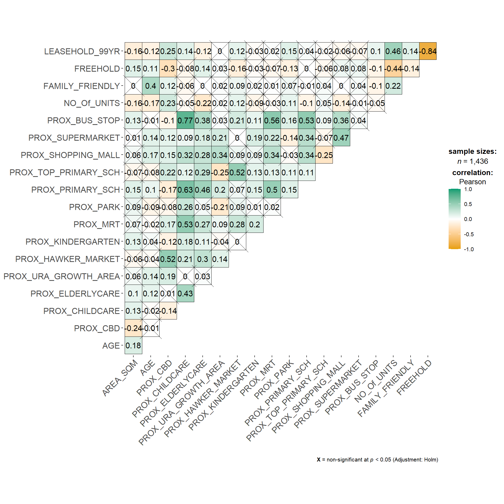
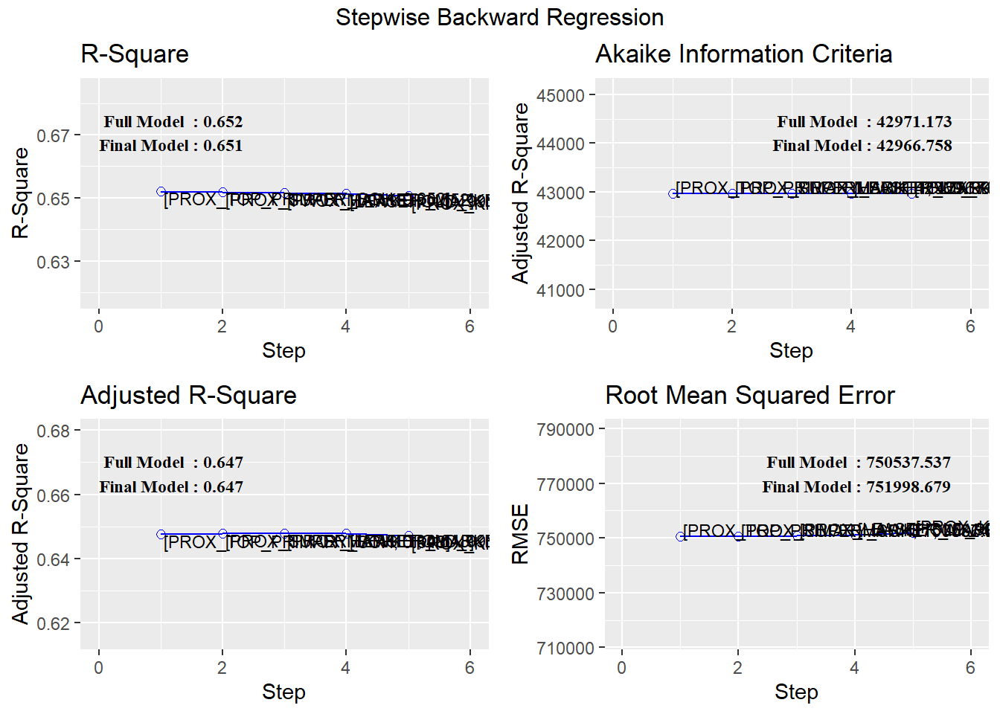
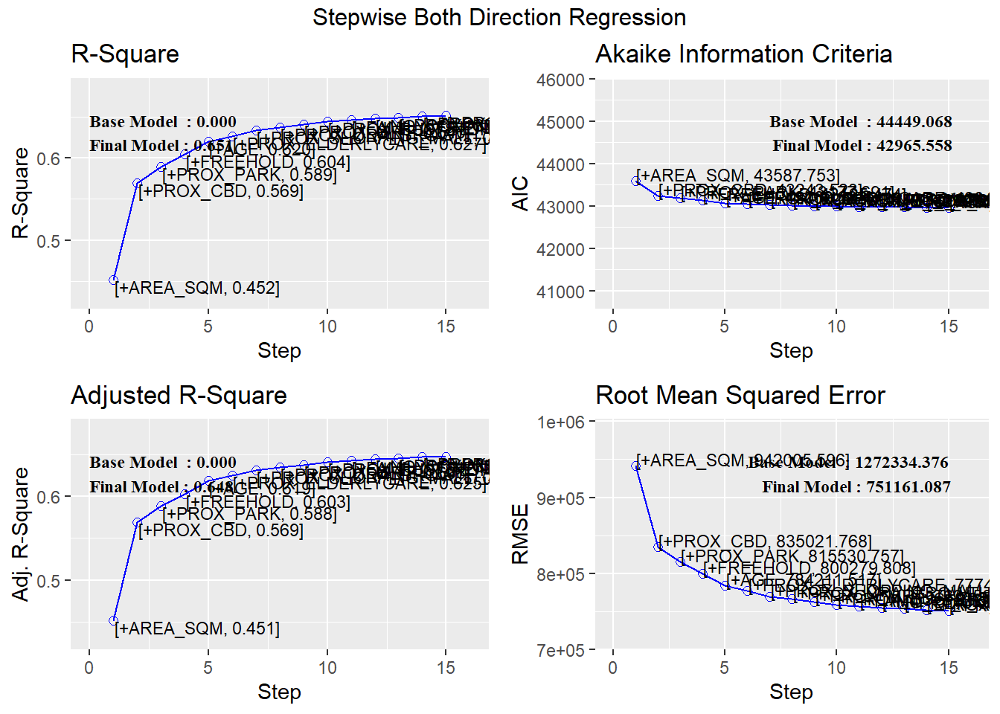
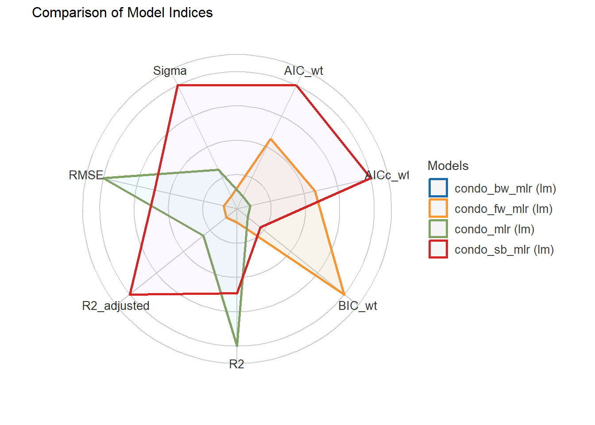
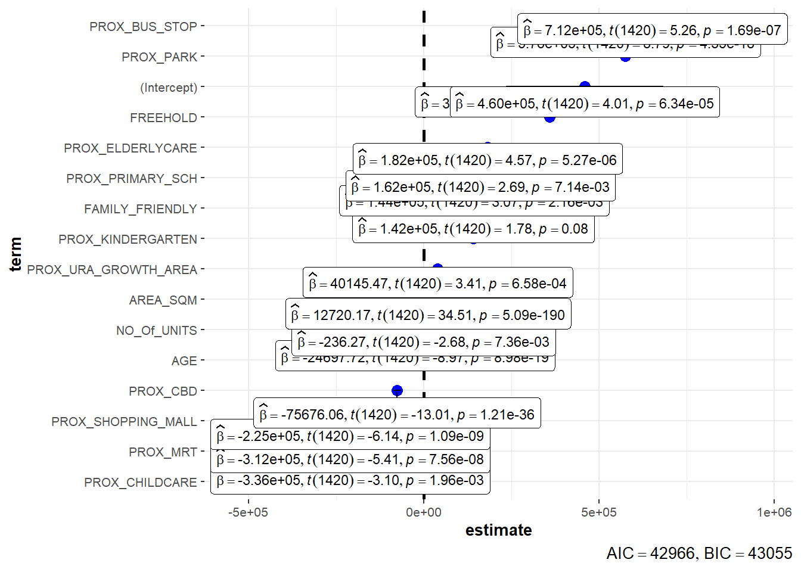
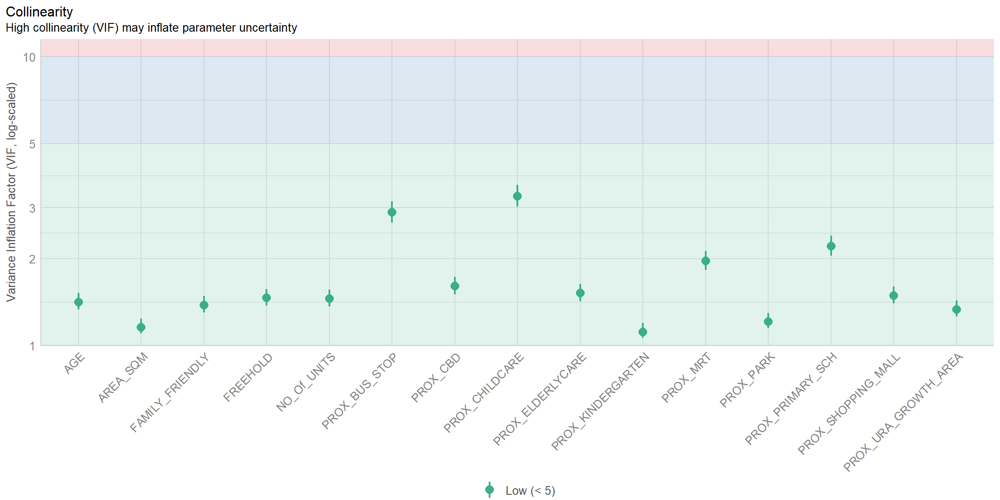
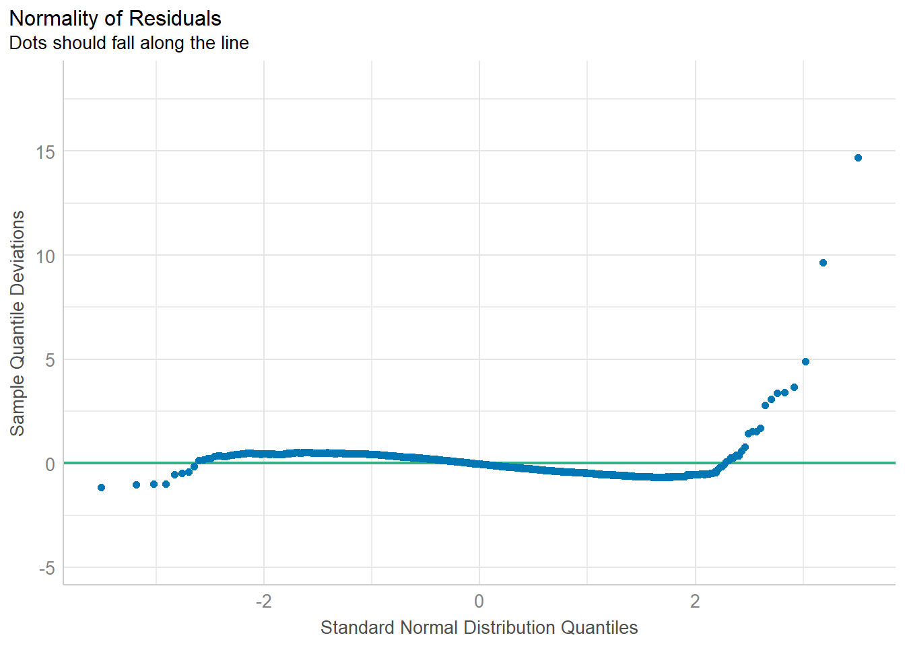
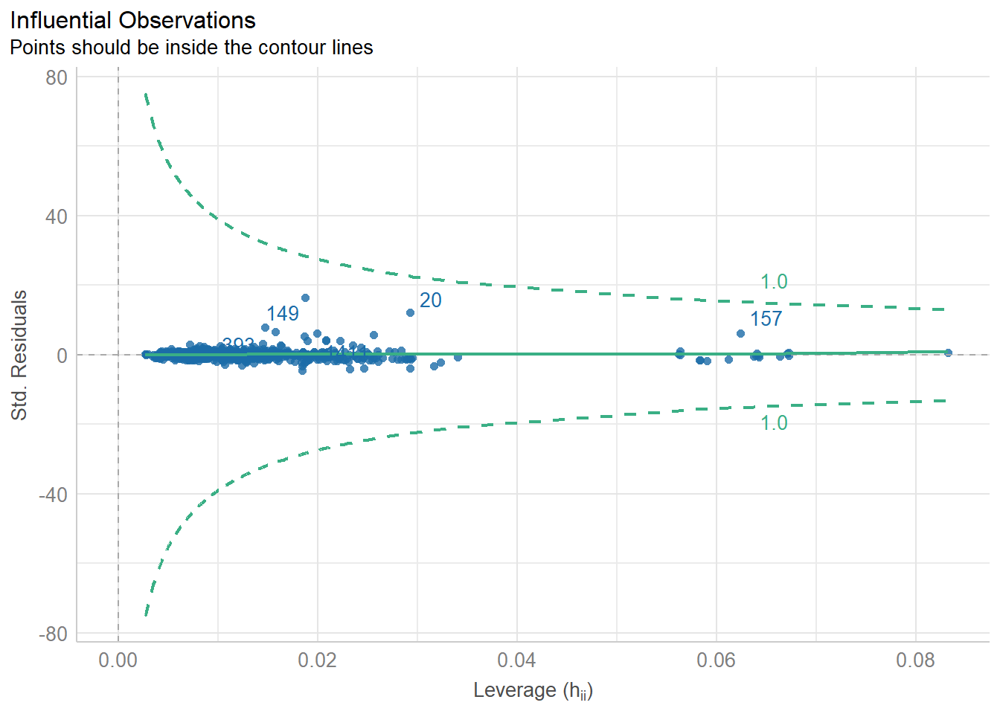

pacman::p_load(olsrr, ggstatsplot, sf,
tmap, tidyverse, gtsummary,
performance, see, sfdep)In-Class Exercise 10
1.0 Installing and Loading the R Packages
Install the following packages:
- olsrr
- ggstatsplot
- sf
- tmap
- tidyverse
- gtsummary
- performance
- see
- sfdep
2.0 Importing the Data
condo_resale <- read_csv("data/aspatial/Condo_resale_2015.csv")
# mpsz <- read_rds("data/rds/mpsz.rds")
mpsz = st_read(dsn = "data/geospatial", layer = "MP14_SUBZONE_WEB_PL")Reading layer `MP14_SUBZONE_WEB_PL' from data source
`C:\Users\0seah\SMU\AY24-25 T1\IS415\IS415\In-Class_Ex\In-Class_Ex10\data\geospatial'
using driver `ESRI Shapefile'
Simple feature collection with 323 features and 15 fields
Geometry type: MULTIPOLYGON
Dimension: XY
Bounding box: xmin: 2667.538 ymin: 15748.72 xmax: 56396.44 ymax: 50256.33
Projected CRS: SVY21#condo_resale_sf <- read_rds("data/rds/condo_resale_sf.rds")
condo_resale_sf <- st_as_sf(condo_resale,
coords = c("LONGITUDE", "LATITUDE"),
crs=4326) %>%
st_transform(crs=3414)3.0 Correlation Analysis - ggstatsplot methods
Correlation matrix is an effective graphical method for checking if there are pair independent variable with high correlation. In the code chunk below, ggcorrmat() of ggstatsplot is used to plot the correlation matrix.
ggcorrmat(condo_resale[, 5:23])
4.0 Building a Hendodic Pricing Model by using the Multiple Linear Regression Method
condo_mlr <- lm(formula = SELLING_PRICE ~ AREA_SQM +
AGE + PROX_CBD + PROX_CHILDCARE +
PROX_ELDERLYCARE + PROX_URA_GROWTH_AREA +
PROX_HAWKER_MARKET + PROX_KINDERGARTEN +
PROX_MRT + PROX_PARK + PROX_PRIMARY_SCH +
PROX_TOP_PRIMARY_SCH + PROX_SHOPPING_MALL +
PROX_SUPERMARKET + PROX_BUS_STOP +
NO_Of_UNITS + FAMILY_FRIENDLY +
FREEHOLD + LEASEHOLD_99YR, #note need the ',' before data
data=condo_resale_sf)
summary(condo_mlr)
Call:
lm(formula = SELLING_PRICE ~ AREA_SQM + AGE + PROX_CBD + PROX_CHILDCARE +
PROX_ELDERLYCARE + PROX_URA_GROWTH_AREA + PROX_HAWKER_MARKET +
PROX_KINDERGARTEN + PROX_MRT + PROX_PARK + PROX_PRIMARY_SCH +
PROX_TOP_PRIMARY_SCH + PROX_SHOPPING_MALL + PROX_SUPERMARKET +
PROX_BUS_STOP + NO_Of_UNITS + FAMILY_FRIENDLY + FREEHOLD +
LEASEHOLD_99YR, data = condo_resale_sf)
Residuals:
Min 1Q Median 3Q Max
-3471036 -286903 -22426 239412 12254549
Coefficients:
Estimate Std. Error t value Pr(>|t|)
(Intercept) 543071.4 136210.9 3.987 7.03e-05 ***
AREA_SQM 12688.7 370.1 34.283 < 2e-16 ***
AGE -24566.0 2766.0 -8.881 < 2e-16 ***
PROX_CBD -78122.0 6791.4 -11.503 < 2e-16 ***
PROX_CHILDCARE -333219.0 111020.3 -3.001 0.002734 **
PROX_ELDERLYCARE 170950.0 42110.8 4.060 5.19e-05 ***
PROX_URA_GROWTH_AREA 38507.6 12523.7 3.075 0.002147 **
PROX_HAWKER_MARKET 23801.2 29299.9 0.812 0.416739
PROX_KINDERGARTEN 144098.0 82738.7 1.742 0.081795 .
PROX_MRT -322775.9 58528.1 -5.515 4.14e-08 ***
PROX_PARK 564487.9 66563.0 8.481 < 2e-16 ***
PROX_PRIMARY_SCH 186170.5 65515.2 2.842 0.004553 **
PROX_TOP_PRIMARY_SCH -477.1 20598.0 -0.023 0.981525
PROX_SHOPPING_MALL -207721.5 42855.5 -4.847 1.39e-06 ***
PROX_SUPERMARKET -48074.7 77145.3 -0.623 0.533273
PROX_BUS_STOP 675755.0 138552.0 4.877 1.20e-06 ***
NO_Of_UNITS -216.2 90.3 -2.394 0.016797 *
FAMILY_FRIENDLY 142128.3 47055.1 3.020 0.002569 **
FREEHOLD 300646.5 77296.5 3.890 0.000105 ***
LEASEHOLD_99YR -77137.4 77570.9 -0.994 0.320192
---
Signif. codes: 0 '***' 0.001 '**' 0.01 '*' 0.05 '.' 0.1 ' ' 1
Residual standard error: 755800 on 1416 degrees of freedom
Multiple R-squared: 0.652, Adjusted R-squared: 0.6474
F-statistic: 139.6 on 19 and 1416 DF, p-value: < 2.2e-16Note: negative value means overestimating (it is negative when y^ > y) refer to slide 6 of lesson 10 (week 11)
5.0 Generating tidy linear regression report
In this InClass, we will be using olsrr packages for:
- comprehensive regression output
- variable selection procedures
olssr_condo <- ols_regress(condo_mlr)
olssr_condo Model Summary
-----------------------------------------------------------------------------
R 0.807 RMSE 750537.537
R-Squared 0.652 MSE 571262902261.223
Adj. R-Squared 0.647 Coef. Var 43.160
Pred R-Squared 0.637 AIC 42971.173
MAE 412117.987 SBC 43081.835
-----------------------------------------------------------------------------
RMSE: Root Mean Square Error
MSE: Mean Square Error
MAE: Mean Absolute Error
AIC: Akaike Information Criteria
SBC: Schwarz Bayesian Criteria
ANOVA
--------------------------------------------------------------------------------
Sum of
Squares DF Mean Square F Sig.
--------------------------------------------------------------------------------
Regression 1.515738e+15 19 7.977571e+13 139.648 0.0000
Residual 8.089083e+14 1416 571262902261.223
Total 2.324647e+15 1435
--------------------------------------------------------------------------------
Parameter Estimates
-----------------------------------------------------------------------------------------------------------------
model Beta Std. Error Std. Beta t Sig lower upper
-----------------------------------------------------------------------------------------------------------------
(Intercept) 543071.420 136210.918 3.987 0.000 275874.535 810268.305
AREA_SQM 12688.669 370.119 0.579 34.283 0.000 11962.627 13414.710
AGE -24566.001 2766.041 -0.166 -8.881 0.000 -29991.980 -19140.022
PROX_CBD -78121.985 6791.377 -0.267 -11.503 0.000 -91444.227 -64799.744
PROX_CHILDCARE -333219.036 111020.303 -0.087 -3.001 0.003 -551000.984 -115437.089
PROX_ELDERLYCARE 170949.961 42110.748 0.083 4.060 0.000 88343.803 253556.120
PROX_URA_GROWTH_AREA 38507.622 12523.661 0.059 3.075 0.002 13940.700 63074.545
PROX_HAWKER_MARKET 23801.197 29299.923 0.019 0.812 0.417 -33674.725 81277.120
PROX_KINDERGARTEN 144097.972 82738.669 0.030 1.742 0.082 -18205.570 306401.514
PROX_MRT -322775.874 58528.079 -0.123 -5.515 0.000 -437586.937 -207964.811
PROX_PARK 564487.876 66563.011 0.148 8.481 0.000 433915.162 695060.590
PROX_PRIMARY_SCH 186170.524 65515.193 0.072 2.842 0.005 57653.253 314687.795
PROX_TOP_PRIMARY_SCH -477.073 20597.972 -0.001 -0.023 0.982 -40882.894 39928.747
PROX_SHOPPING_MALL -207721.520 42855.500 -0.109 -4.847 0.000 -291788.613 -123654.427
PROX_SUPERMARKET -48074.679 77145.257 -0.012 -0.623 0.533 -199405.956 103256.599
PROX_BUS_STOP 675755.044 138551.991 0.133 4.877 0.000 403965.817 947544.272
NO_Of_UNITS -216.180 90.302 -0.046 -2.394 0.017 -393.320 -39.040
FAMILY_FRIENDLY 142128.272 47055.082 0.056 3.020 0.003 49823.107 234433.438
FREEHOLD 300646.543 77296.529 0.117 3.890 0.000 149018.525 452274.561
LEASEHOLD_99YR -77137.375 77570.869 -0.030 -0.994 0.320 -229303.551 75028.801
-----------------------------------------------------------------------------------------------------------------Note: What is generated is an object, the actual model is within the object
6.0 Variable selection
6.1 Forward stepwise
condo_fw_mlr <- ols_step_forward_p(
condo_mlr,
p_val = 0.05,
details = FALSE) #basic or detailed report
condo_fw_mlr
Stepwise Summary
-----------------------------------------------------------------------------------------
Step Variable AIC SBC SBIC R2 Adj. R2
-----------------------------------------------------------------------------------------
0 Base Model 44449.068 44459.608 40371.745 0.00000 0.00000
1 AREA_SQM 43587.753 43603.562 39510.883 0.45184 0.45146
2 PROX_CBD 43243.523 43264.602 39167.182 0.56928 0.56868
3 PROX_PARK 43177.691 43204.039 39101.331 0.58915 0.58829
4 FREEHOLD 43125.474 43157.092 39049.179 0.60438 0.60327
5 AGE 43069.222 43106.109 38993.167 0.62010 0.61878
6 PROX_ELDERLYCARE 43046.515 43088.672 38970.548 0.62659 0.62502
7 PROX_SHOPPING_MALL 43020.990 43068.417 38945.209 0.63367 0.63188
8 PROX_URA_GROWTH_AREA 43009.092 43061.788 38933.407 0.63720 0.63517
9 PROX_MRT 42999.058 43057.024 38923.483 0.64023 0.63796
10 PROX_BUS_STOP 42984.951 43048.186 38909.582 0.64424 0.64175
11 FAMILY_FRIENDLY 42981.085 43049.590 38905.797 0.64569 0.64296
12 NO_Of_UNITS 42975.246 43049.021 38900.092 0.64762 0.64465
13 PROX_CHILDCARE 42971.858 43050.902 38896.812 0.64894 0.64573
14 PROX_PRIMARY_SCH 42966.758 43051.072 38891.872 0.65067 0.64723
-----------------------------------------------------------------------------------------
Final Model Output
------------------
Model Summary
-----------------------------------------------------------------------------
R 0.807 RMSE 751998.679
R-Squared 0.651 MSE 571471422208.591
Adj. R-Squared 0.647 Coef. Var 43.168
Pred R-Squared 0.638 AIC 42966.758
MAE 414819.628 SBC 43051.072
-----------------------------------------------------------------------------
RMSE: Root Mean Square Error
MSE: Mean Square Error
MAE: Mean Absolute Error
AIC: Akaike Information Criteria
SBC: Schwarz Bayesian Criteria
ANOVA
--------------------------------------------------------------------------------
Sum of
Squares DF Mean Square F Sig.
--------------------------------------------------------------------------------
Regression 1.512586e+15 14 1.080418e+14 189.059 0.0000
Residual 8.120609e+14 1421 571471422208.591
Total 2.324647e+15 1435
--------------------------------------------------------------------------------
Parameter Estimates
-----------------------------------------------------------------------------------------------------------------
model Beta Std. Error Std. Beta t Sig lower upper
-----------------------------------------------------------------------------------------------------------------
(Intercept) 527633.222 108183.223 4.877 0.000 315417.244 739849.200
AREA_SQM 12777.523 367.479 0.584 34.771 0.000 12056.663 13498.382
PROX_CBD -77131.323 5763.125 -0.263 -13.384 0.000 -88436.469 -65826.176
PROX_PARK 570504.807 65507.029 0.150 8.709 0.000 442003.938 699005.677
FREEHOLD 350599.812 48506.485 0.136 7.228 0.000 255447.802 445751.821
AGE -24687.739 2754.845 -0.167 -8.962 0.000 -30091.739 -19283.740
PROX_ELDERLYCARE 185575.623 39901.864 0.090 4.651 0.000 107302.737 263848.510
PROX_SHOPPING_MALL -220947.251 36561.832 -0.115 -6.043 0.000 -292668.213 -149226.288
PROX_URA_GROWTH_AREA 39163.254 11754.829 0.060 3.332 0.001 16104.571 62221.936
PROX_MRT -294745.107 56916.367 -0.112 -5.179 0.000 -406394.234 -183095.980
PROX_BUS_STOP 682482.221 134513.243 0.134 5.074 0.000 418616.359 946348.082
FAMILY_FRIENDLY 146307.576 46893.021 0.057 3.120 0.002 54320.593 238294.560
NO_Of_UNITS -245.480 87.947 -0.053 -2.791 0.005 -418.000 -72.961
PROX_CHILDCARE -318472.751 107959.512 -0.084 -2.950 0.003 -530249.889 -106695.613
PROX_PRIMARY_SCH 159856.136 60234.599 0.062 2.654 0.008 41697.849 278014.424
-----------------------------------------------------------------------------------------------------------------plot(condo_fw_mlr)
6.2 Backward stepwise
condo_bw_mlr <- ols_step_backward_p(
condo_mlr,
p_val = 0.05,
details = FALSE) #basic or detailed report
condo_bw_mlr
Stepwise Summary
-----------------------------------------------------------------------------------------
Step Variable AIC SBC SBIC R2 Adj. R2
-----------------------------------------------------------------------------------------
0 Full Model 42971.173 43081.835 38896.546 0.65203 0.64736
1 PROX_TOP_PRIMARY_SCH 42969.173 43074.565 38894.518 0.65203 0.64761
2 PROX_SUPERMARKET 42967.567 43067.689 38892.873 0.65193 0.64776
3 PROX_HAWKER_MARKET 42966.461 43061.315 38891.719 0.65172 0.64779
4 LEASEHOLD_99YR 42965.558 43055.141 38890.764 0.65145 0.64777
5 PROX_KINDERGARTEN 42966.758 43051.072 38891.872 0.65067 0.64723
-----------------------------------------------------------------------------------------
Final Model Output
------------------
Model Summary
-----------------------------------------------------------------------------
R 0.807 RMSE 751998.679
R-Squared 0.651 MSE 571471422208.591
Adj. R-Squared 0.647 Coef. Var 43.168
Pred R-Squared 0.638 AIC 42966.758
MAE 414819.628 SBC 43051.072
-----------------------------------------------------------------------------
RMSE: Root Mean Square Error
MSE: Mean Square Error
MAE: Mean Absolute Error
AIC: Akaike Information Criteria
SBC: Schwarz Bayesian Criteria
ANOVA
--------------------------------------------------------------------------------
Sum of
Squares DF Mean Square F Sig.
--------------------------------------------------------------------------------
Regression 1.512586e+15 14 1.080418e+14 189.059 0.0000
Residual 8.120609e+14 1421 571471422208.591
Total 2.324647e+15 1435
--------------------------------------------------------------------------------
Parameter Estimates
-----------------------------------------------------------------------------------------------------------------
model Beta Std. Error Std. Beta t Sig lower upper
-----------------------------------------------------------------------------------------------------------------
(Intercept) 527633.222 108183.223 4.877 0.000 315417.244 739849.200
AREA_SQM 12777.523 367.479 0.584 34.771 0.000 12056.663 13498.382
AGE -24687.739 2754.845 -0.167 -8.962 0.000 -30091.739 -19283.740
PROX_CBD -77131.323 5763.125 -0.263 -13.384 0.000 -88436.469 -65826.176
PROX_CHILDCARE -318472.751 107959.512 -0.084 -2.950 0.003 -530249.889 -106695.613
PROX_ELDERLYCARE 185575.623 39901.864 0.090 4.651 0.000 107302.737 263848.510
PROX_URA_GROWTH_AREA 39163.254 11754.829 0.060 3.332 0.001 16104.571 62221.936
PROX_MRT -294745.107 56916.367 -0.112 -5.179 0.000 -406394.234 -183095.980
PROX_PARK 570504.807 65507.029 0.150 8.709 0.000 442003.938 699005.677
PROX_PRIMARY_SCH 159856.136 60234.599 0.062 2.654 0.008 41697.849 278014.424
PROX_SHOPPING_MALL -220947.251 36561.832 -0.115 -6.043 0.000 -292668.213 -149226.288
PROX_BUS_STOP 682482.221 134513.243 0.134 5.074 0.000 418616.359 946348.082
NO_Of_UNITS -245.480 87.947 -0.053 -2.791 0.005 -418.000 -72.961
FAMILY_FRIENDLY 146307.576 46893.021 0.057 3.120 0.002 54320.593 238294.560
FREEHOLD 350599.812 48506.485 0.136 7.228 0.000 255447.802 445751.821
-----------------------------------------------------------------------------------------------------------------plot(condo_bw_mlr)
6.3 Stepwise (bidirectional)
condo_sb_mlr <- ols_step_both_p(
condo_mlr,
p_val = 0.05,
details = FALSE) #basic or detailed report
condo_sb_mlr
Stepwise Summary
---------------------------------------------------------------------------------------------
Step Variable AIC SBC SBIC R2 Adj. R2
---------------------------------------------------------------------------------------------
0 Base Model 44449.068 44459.608 40371.745 0.00000 0.00000
1 AREA_SQM (+) 43587.753 43603.562 39510.883 0.45184 0.45146
2 PROX_CBD (+) 43243.523 43264.602 39167.182 0.56928 0.56868
3 PROX_PARK (+) 43177.691 43204.039 39101.331 0.58915 0.58829
4 FREEHOLD (+) 43125.474 43157.092 39049.179 0.60438 0.60327
5 AGE (+) 43069.222 43106.109 38993.167 0.62010 0.61878
6 PROX_ELDERLYCARE (+) 43046.515 43088.672 38970.548 0.62659 0.62502
7 PROX_SHOPPING_MALL (+) 43020.990 43068.417 38945.209 0.63367 0.63188
8 PROX_URA_GROWTH_AREA (+) 43009.092 43061.788 38933.407 0.63720 0.63517
9 PROX_MRT (+) 42999.058 43057.024 38923.483 0.64023 0.63796
10 PROX_BUS_STOP (+) 42984.951 43048.186 38909.582 0.64424 0.64175
11 FAMILY_FRIENDLY (+) 42981.085 43049.590 38905.797 0.64569 0.64296
12 NO_Of_UNITS (+) 42975.246 43049.021 38900.092 0.64762 0.64465
13 PROX_CHILDCARE (+) 42971.858 43050.902 38896.812 0.64894 0.64573
14 PROX_PRIMARY_SCH (+) 42966.758 43051.072 38891.872 0.65067 0.64723
15 PROX_KINDERGARTEN (+) 42965.558 43055.141 38890.764 0.65145 0.64777
---------------------------------------------------------------------------------------------
Final Model Output
------------------
Model Summary
-----------------------------------------------------------------------------
R 0.807 RMSE 751161.087
R-Squared 0.651 MSE 570600646491.086
Adj. R-Squared 0.648 Coef. Var 43.135
Pred R-Squared 0.638 AIC 42965.558
MAE 413583.799 SBC 43055.141
-----------------------------------------------------------------------------
RMSE: Root Mean Square Error
MSE: Mean Square Error
MAE: Mean Absolute Error
AIC: Akaike Information Criteria
SBC: Schwarz Bayesian Criteria
ANOVA
--------------------------------------------------------------------------------
Sum of
Squares DF Mean Square F Sig.
--------------------------------------------------------------------------------
Regression 1.514394e+15 15 1.009596e+14 176.936 0.0000
Residual 8.102529e+14 1420 570600646491.086
Total 2.324647e+15 1435
--------------------------------------------------------------------------------
Parameter Estimates
-----------------------------------------------------------------------------------------------------------------
model Beta Std. Error Std. Beta t Sig lower upper
-----------------------------------------------------------------------------------------------------------------
(Intercept) 459826.675 114616.014 4.012 0.000 234991.777 684661.574
AREA_SQM 12720.174 368.610 0.581 34.509 0.000 11997.096 13443.252
PROX_CBD -75676.065 5816.474 -0.258 -13.011 0.000 -87085.870 -64266.259
PROX_PARK 575749.528 65523.382 0.151 8.787 0.000 447216.504 704282.552
FREEHOLD 360203.286 48768.851 0.140 7.386 0.000 264536.552 455870.021
AGE -24697.719 2752.751 -0.167 -8.972 0.000 -30097.615 -19297.824
PROX_ELDERLYCARE 182435.081 39910.469 0.088 4.571 0.000 104145.268 260724.893
PROX_SHOPPING_MALL -224513.955 36588.872 -0.117 -6.136 0.000 -296288.004 -152739.906
PROX_URA_GROWTH_AREA 40145.474 11758.824 0.062 3.414 0.001 17078.942 63212.007
PROX_MRT -311753.202 57670.032 -0.119 -5.406 0.000 -424880.814 -198625.590
PROX_BUS_STOP 711858.014 135420.040 0.140 5.257 0.000 446213.188 977502.840
FAMILY_FRIENDLY 144034.218 46874.683 0.057 3.073 0.002 52083.153 235985.283
NO_Of_UNITS -236.270 88.032 -0.051 -2.684 0.007 -408.956 -63.583
PROX_CHILDCARE -336118.857 108331.761 -0.088 -3.103 0.002 -548626.339 -123611.374
PROX_PRIMARY_SCH 162183.897 60202.895 0.063 2.694 0.007 44087.730 280280.063
PROX_KINDERGARTEN 141915.768 79726.155 0.029 1.780 0.075 -14477.927 298309.464
-----------------------------------------------------------------------------------------------------------------plot(condo_sb_mlr)
7.0 Model selection
7.1 Comparing performace
In the code chunk below, compare_performance() of performance package is used to compare the performance of the models.
metric <- compare_performance(condo_mlr,
condo_fw_mlr$model,
condo_bw_mlr$model,
condo_sb_mlr$model)In the code chunk below, gsub() is used to tidy the test value in Name field.
metric$Name <- gsub(".*\\\\([a-zA-Z0-9_]+)\\\\, \\\\model\\\\.*", "\\1", metric$Name)7.2 Visual comparison
In the code chunk below, plot() of see package is used to plot a radar chart to compare the performance measures of the models.
plot(metric)
Note: The different indices are normalised and larger values indicate better model performance. Hence, points closer to the center indicate worse fit indices. blue is being overlapped by yellow as they have the same stats red is overall better
8.0 Visualising model parameters
ggcoefstats(condo_sb_mlr$model,
sort = "ascending")
9.0 Checking for multicollinearity
check_collinearity(condo_sb_mlr$model)# Check for Multicollinearity
Low Correlation
Term VIF VIF 95% CI Increased SE Tolerance Tolerance 95% CI
AREA_SQM 1.15 [1.10, 1.24] 1.07 0.87 [0.81, 0.91]
PROX_CBD 1.60 [1.50, 1.73] 1.27 0.62 [0.58, 0.67]
PROX_PARK 1.21 [1.15, 1.30] 1.10 0.83 [0.77, 0.87]
FREEHOLD 1.46 [1.37, 1.57] 1.21 0.68 [0.64, 0.73]
AGE 1.41 [1.33, 1.52] 1.19 0.71 [0.66, 0.75]
PROX_ELDERLYCARE 1.52 [1.42, 1.63] 1.23 0.66 [0.61, 0.70]
PROX_SHOPPING_MALL 1.49 [1.40, 1.60] 1.22 0.67 [0.62, 0.72]
PROX_URA_GROWTH_AREA 1.33 [1.26, 1.43] 1.16 0.75 [0.70, 0.79]
PROX_MRT 1.96 [1.83, 2.13] 1.40 0.51 [0.47, 0.55]
PROX_BUS_STOP 2.89 [2.66, 3.15] 1.70 0.35 [0.32, 0.38]
FAMILY_FRIENDLY 1.38 [1.30, 1.48] 1.18 0.72 [0.67, 0.77]
NO_Of_UNITS 1.45 [1.37, 1.56] 1.21 0.69 [0.64, 0.73]
PROX_CHILDCARE 3.29 [3.02, 3.59] 1.81 0.30 [0.28, 0.33]
PROX_PRIMARY_SCH 2.21 [2.05, 2.40] 1.49 0.45 [0.42, 0.49]
PROX_KINDERGARTEN 1.11 [1.06, 1.20] 1.05 0.90 [0.84, 0.94]plot(check_collinearity(condo_sb_mlr$model)) +
theme(axis.text.x = element_text(
angle = 45, hjust = 1))
10.0 Linearity assumption test
11.0 Normality assumption test
code chunk below uses check_normality of performance package to perform normality assumption test.
plot(check_normality((condo_sb_mlr$model)))
Note: Figure resemble a normal distribution
12.0 Checking of outliers
outliers <- check_outliers(condo_sb_mlr$model,
method = "cook")
outliersOK: No outliers detected.
- Based on the following method and threshold: cook (1).
- For variable: (Whole model)plot(check_outliers(condo_sb_mlr$model,
method = "cook"))
13.0 Spatial Non-stationary Assumption (Visualising spatial non-stationary)
First, we will export the residual of the hendondic pricing model and save it as a data frame.
mlr_output <- as.data.frame(condo_fw_mlr$model$residuals) %>%
rename(`FW_MLR_RES` = `condo_fw_mlr$model$residuals`)